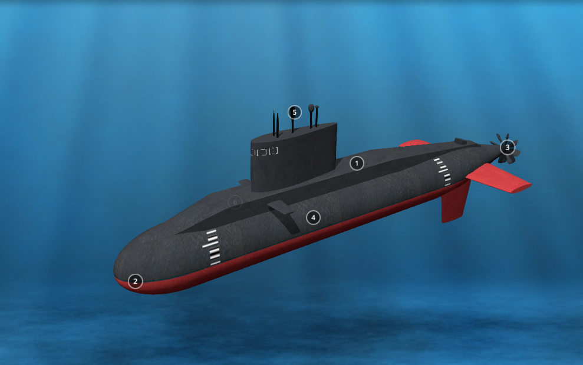

<br>
##### <strong>Week 1: Introduction</strong>
This week we focused on the creation on my documentation website, alongside the ideas for our final projects.
<strong>Creation of the Website</strong>
<p>For this first week, I learned HTML and CSS in order to create my own website. Personally, I've never made a website, but resources such as Bootstrap and templates helped me complete the website. I used GitHub resources alongside Sublime Text to make this website possible.
<div></div>
<strong>Final Project Proposal</strong>
<p>Overall, I had 2 ideas for my project, one being for my own personal use and one because of interest and curiosity.</p>
<strong>Project #1: Glasses Cleaning Machine</strong>
<p>This idea was inspred by one of my daily struggles, cleaning my glasses. I want to create a type of machine that both washes and dries the lenses of the glasses in the most effective and efficient way. This would work by creating a sort of case that resembles a drive-thru car wash.</p>
<p>However, through further analysis, while this has already been built, current ways to clean lenses are already effective and would accomplish nearly the same thing as such.</p>
<strong>Project #2: The Submarine</strong>
<p>This idea was inspired by pure interest and curiosity. While my love for LEGOS has taken me far, being able to create a sort of remote controlled toy-like submarine would be extremely incredible and use many lessons that I will learn in the following weeks. The submarine would be considerably small and would be controlled by a wireless remote.</p>
<div></div>
[Home](../index.html).